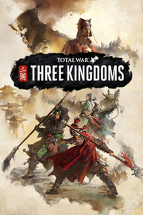

Total War Three Kingdoms
Detalles
|  | |
| Tiempo de juego | No Jugado |
| Última actividad | Nunca |
| Añadido | 11/6/2024 15:35:16 |
| Modificado | 11/8/2024 12:01:12 |
| Estado de finalización | No Jugado |
| Librería | Playnite |
| Fuente | 2TB GAS |
| Plataforma | PC (Windows) |
| Fecha de lanzamiento | 5/23/2019 |
| Puntuación de la Comunidad | 81 |
| Puntuación de la Crítica | 85 |
| Puntuación de usuario | |
| Género | Acción Estrategia |
| Desarrollador | Creative Assembly Feral Interactive (Linux) Feral Interactive (Mac) |
| Editor | Feral Interactive (Linux) Feral Interactive (Mac) Sega |
| Característica | Cloud Saves Cooperativo Cooperativo En LAN Cooperativo En Línea Cromos De Jcj Jcj En LAN Jcj En Línea Logros De Multijugador Préstamo Familiar Un Jugador |
| Enlaces | Punto de encuentro Discusiones Guías Noticias Página de la tienda PCGamingWiki Logros |
| Tag | Acción Bélicos Cooperativos Destrucción Estrategia Estrategia por turnos ETR Fantasía Gran banda sonora Gran estrategia Históricos Militares Multijugador Por turnos Sandbox Simulación Tácticas en tiempo real Tácticos Un jugador Violentos |
Descripción
Total War: THREE KINGDOMS es la primera serie de videojuegos de estrategia ganadora de varios premios que recrea conflictos épicos de la antigua China. Al combinar una apasionante campaña por turnos de construcción de imperios, gobierno y conquistas con batallas increíbles a tiempo real, Total War: THREE KINGDOMS redefine la serie en una época de héroes y leyendas.

China en el año 190 d. C.
Bienvenidos a una nueva era de conquistas legendarias.
Esta preciosa aunque fracturada tierra reclama un nuevo emperador y una nueva forma de vida. Unifica China bajo tu mandato, forja la próxima gran dinastía y construye un legado que perdure a lo largo de los siglos.
Elige entre un elenco de 12 legendarios señores de la guerra y conquista el reino. Recluta personajes heroicos para que ayuden a tu causa y domina a tus enemigos en los frentes militar, tecnológico, político y económico.
¿Entablarás amistades poderosas, formarás alianzas fraternales y te ganarás el respeto de tus numerosos enemigos? ¿O preferirías cometer actos de traición sin piedad y convertirte en un maestro de la gran intriga política?
Tu leyenda aún no está escrita, pero hay algo que sí es seguro: la gloriosa conquista te espera.

Descubre la China de los Tres Reinos, una tierra de impresionante belleza natural. Lucha a lo largo de frondosos subtrópicos, áridos desiertos y montañas nevadas. Maravíllate ante lugares legendarios como la Gran Muralla de China y el río Yangtsé. Explora a lo largo y ancho de la antigua China a medida que restauras la armonía de su asediado paisaje.

Forja un nuevo imperio como uno de los 12 legendarios señores de la guerra basados en el Romance de los Tres Reinos, la célebre novela histórica de China. Comandantes sin igual, poderosos guerreros e ilustres hombres de Estado; todos estos personajes tienen un estilo de juego y unos objetivos únicos. Recluta un elenco épico de héroes secundarios para dirigir tus ejércitos, gobernar tus provincias y fortalecer tu imperio en expansión. Los personajes son el núcleo del juego y el futuro de China será moldeado por sus campeones.

Basado en el guanxi, un concepto Chino de interrelaciones dinámicas, Total War: THREE KINGDOMS adopta un enfoque de cambio de paradigma respecto a los personajes, mediante icónicos y descomunales héroes y sus relaciones, las cuales definen el futuro de la antigua China. Cada uno de estos personajes se diseña con personalidades, motivaciones y gustos y aversiones únicos. Además, también se relacionan profundamente entre ellos de manera positiva y negativa, lo que determinará cómo se desarrolla tu historia.

A través de increíbles efectos visuales y llamativos combates Wushu, THREE KINGDOMS representa el arte de la guerra. Además, la excelente interfaz, las animadas vistas y el diseño inspirado en China hacen que esta representación de su antigua época sea un espectáculo visual.

La campaña por turnos y las batallas en tiempo real de Total War: THREE KINGDOMS están más interconectadas que nunca. Ahora, las acciones en la batalla tienen muchas más consecuencias, ya que afectan a tu relación con los héroes, así como a las amistades y rivalidades que estos desarrollan con otros personajes. En un mundo en el que los aliados poderosos son una de las claves del éxito, esto añade un elemento totalmente nuevo a la hora de alzarse con la victoria.
China en el año 190 d. C.
Bienvenidos a una nueva era de conquistas legendarias.
Esta preciosa aunque fracturada tierra reclama un nuevo emperador y una nueva forma de vida. Unifica China bajo tu mandato, forja la próxima gran dinastía y construye un legado que perdure a lo largo de los siglos.
Elige entre un elenco de 12 legendarios señores de la guerra y conquista el reino. Recluta personajes heroicos para que ayuden a tu causa y domina a tus enemigos en los frentes militar, tecnológico, político y económico.
¿Entablarás amistades poderosas, formarás alianzas fraternales y te ganarás el respeto de tus numerosos enemigos? ¿O preferirías cometer actos de traición sin piedad y convertirte en un maestro de la gran intriga política?
Tu leyenda aún no está escrita, pero hay algo que sí es seguro: la gloriosa conquista te espera.
LA ANTIGUA CHINA RECREADA
Descubre la China de los Tres Reinos, una tierra de impresionante belleza natural. Lucha a lo largo de frondosos subtrópicos, áridos desiertos y montañas nevadas. Maravíllate ante lugares legendarios como la Gran Muralla de China y el río Yangtsé. Explora a lo largo y ancho de la antigua China a medida que restauras la armonía de su asediado paisaje.
LAS MAYORES LEYENDAS DE CHINA
Forja un nuevo imperio como uno de los 12 legendarios señores de la guerra basados en el Romance de los Tres Reinos, la célebre novela histórica de China. Comandantes sin igual, poderosos guerreros e ilustres hombres de Estado; todos estos personajes tienen un estilo de juego y unos objetivos únicos. Recluta un elenco épico de héroes secundarios para dirigir tus ejércitos, gobernar tus provincias y fortalecer tu imperio en expansión. Los personajes son el núcleo del juego y el futuro de China será moldeado por sus campeones.
SISTEMA GUANXI
Basado en el guanxi, un concepto Chino de interrelaciones dinámicas, Total War: THREE KINGDOMS adopta un enfoque de cambio de paradigma respecto a los personajes, mediante icónicos y descomunales héroes y sus relaciones, las cuales definen el futuro de la antigua China. Cada uno de estos personajes se diseña con personalidades, motivaciones y gustos y aversiones únicos. Además, también se relacionan profundamente entre ellos de manera positiva y negativa, lo que determinará cómo se desarrolla tu historia.
PUREZA ARTÍSTICA
A través de increíbles efectos visuales y llamativos combates Wushu, THREE KINGDOMS representa el arte de la guerra. Además, la excelente interfaz, las animadas vistas y el diseño inspirado en China hacen que esta representación de su antigua época sea un espectáculo visual.
LA ARMONÍA EN TIEMPO REAL Y POR TURNOS
La campaña por turnos y las batallas en tiempo real de Total War: THREE KINGDOMS están más interconectadas que nunca. Ahora, las acciones en la batalla tienen muchas más consecuencias, ya que afectan a tu relación con los héroes, así como a las amistades y rivalidades que estos desarrollan con otros personajes. En un mundo en el que los aliados poderosos son una de las claves del éxito, esto añade un elemento totalmente nuevo a la hora de alzarse con la victoria.